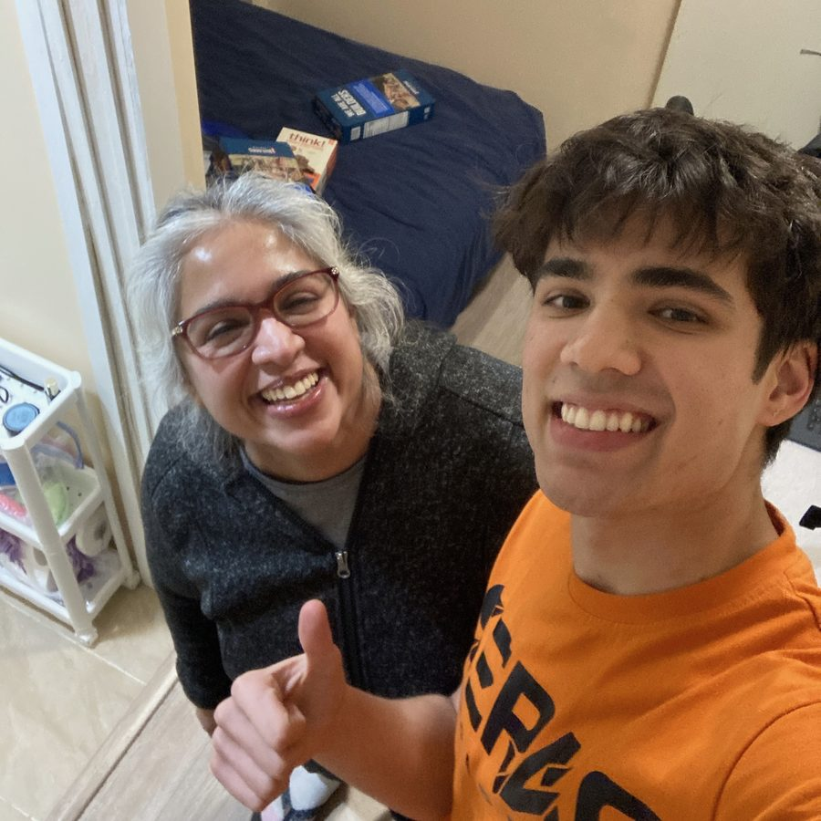

How San Francisco has come to manage the visibility of homelessness rather than its scale, after Grants Pass.
Benjamin Hobson
I'm an Honours Economics student at the University of British Columbia, interested in industrial policy, wealth inequality, and the green energy transition. I work as a research assistant at the Vancouver School of Economics and write about housing and public policy.
Currently
- Research assistant to Professor Réka Juhász at the Vancouver School of Economics, studying how government-directed R&D affects innovation, using NASA's Apollo program as a natural experiment.
- I am also trying to build aid accountability infrastructure with a friend.
Previously
Research assistant to Professor Jamie McCasland, February to August 2026, studying what shapes homeless individuals' shelter choices in the Bay Area. I structured interviews with shelter staff to collect data on factors like privacy, curfews, and transit access for a discrete choice experiment, and built a reference database of shelters across four cities. That work informed my article on San Francisco's encampment policy.
Recent writing
What secondary market prices suggest about the gap between private valuations and IPO targets.
About

I grew up in San Francisco and the South Bay Area, California, and I'm in my third year at UBC. Outside of economics, I train Brazilian jiu-jitsu and grew up playing soccer. Always happy to chat, reach me at benh05@student.ubc.ca.